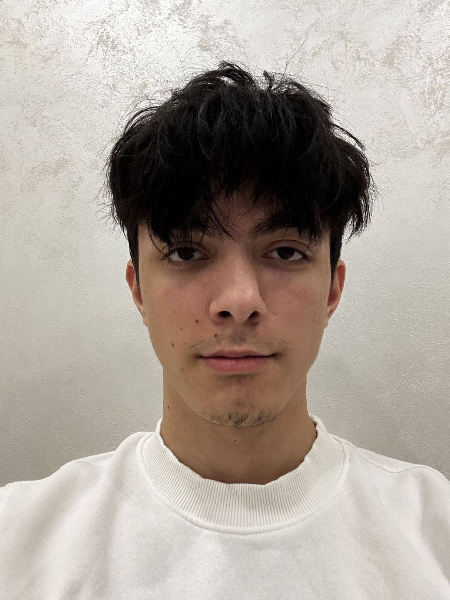
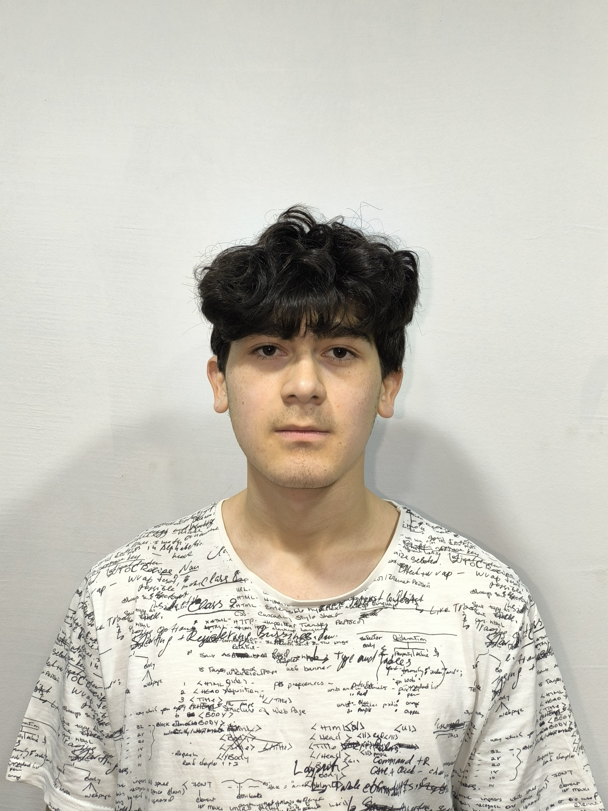
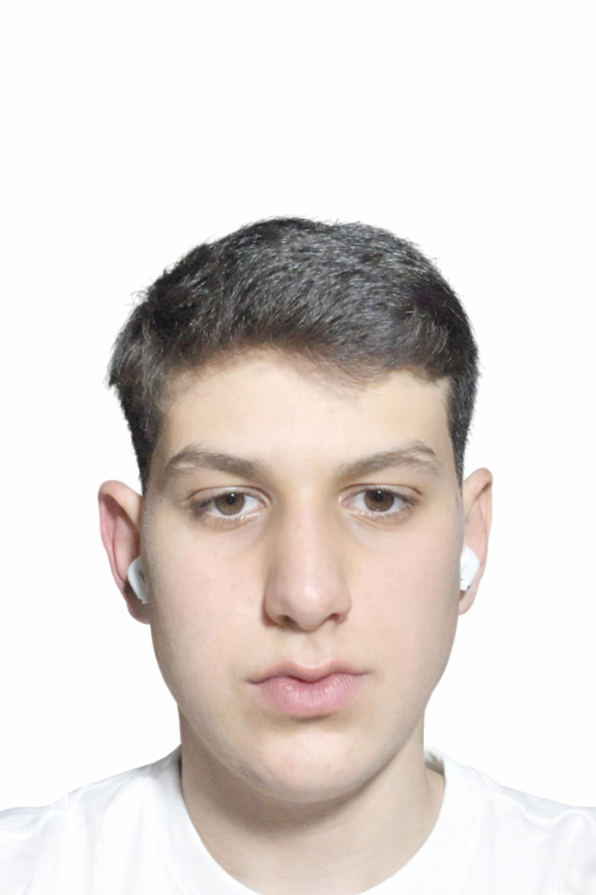
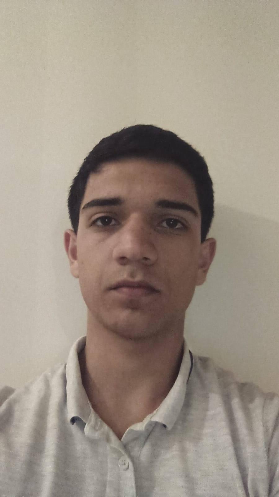

Our Team

Umid Qurbanli
Lead Developer
Main Responsible for all technology-related operations.

Emin Rzayev
Researcher
Searched for sources, reviewed research, and compiled data.

Rauf Novruzlu
COO & SMM
Responsible for social media and for defining the team’s current direction and strategy.

Hamid Shahbazov
CFO & Foundriser
Organizes the team and keeps every project on track.